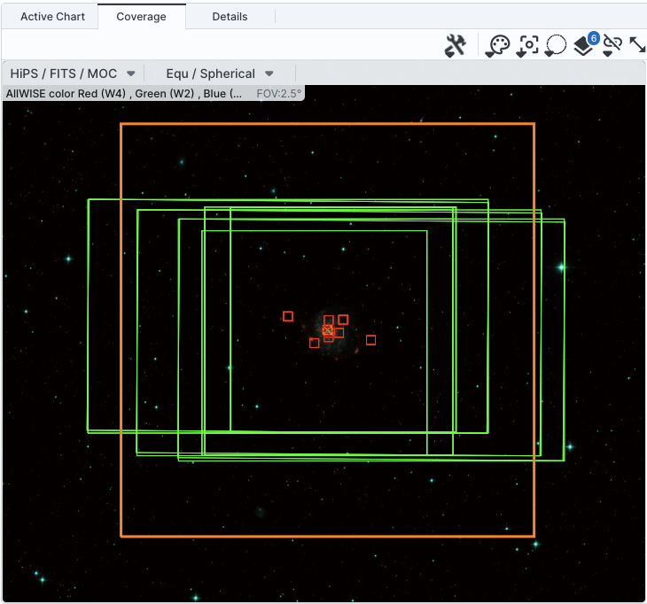
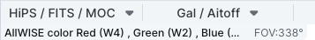
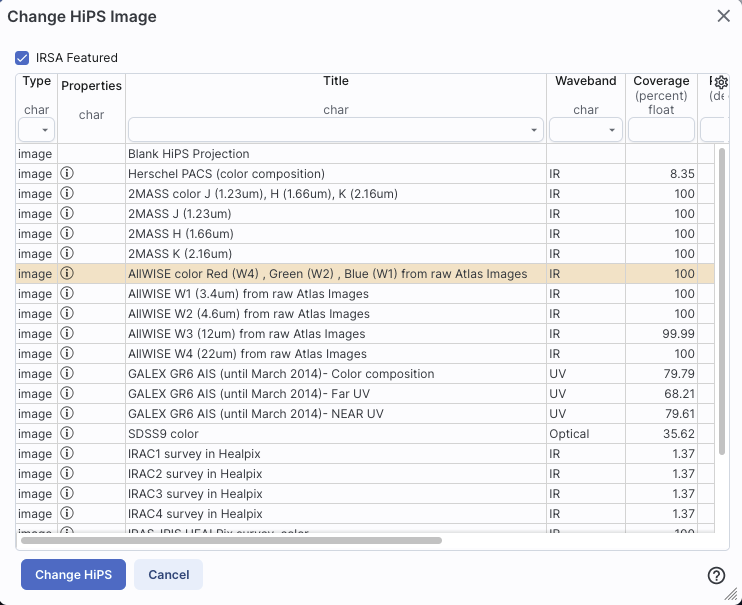

Firefly: Images
Firefly can load images as well as support extensive interacting
with images. This chapter covers loading images; visualization tools are covered in
another chapter. Firefly can load images that are FITS  and HiPS
formats. Any catalogs you have loaded are
overlaid on the images; see visualization
chapter for more information.
and HiPS
formats. Any catalogs you have loaded are
overlaid on the images; see visualization
chapter for more information.
Contents of page/chapter:
+Searching for and Loading Images
+Making 3-color Images
+HiPS Images: General Information
+Searching for HiPS Images
+Adding New Images
+Coverage Image
+Upper Left HiPS menus
When you first start Firefly, depending on how you get into
it, an image may be pre-loaded. If the image is pre-loaded, you can
start manipulating the image right away; see the Visualization section.
If the first screen you come to is an empty results page, then you
need to decide what to load. To search for images, click on "images"
at the top to begin an image search:
If you do not have an image pre-loaded, the default start position is
in the position search for images. It is assuming by default that you
want to load a FITS image from IRSA services, though you can also load
a FITS image from disk or off another service on the web (see below).
(Flexible
image transport system, FITS , files are widely used in astronomy and are an easy
way to store images.)
The search window looks like this:
- 1. Choose Image Type
- First, you select which images you want to load: FITS
images (individually), FITS images that you load into a new
three-color image (more on 3-color images
below), or HiPS images (more on HiPS below; also see IVOA docs
for more about what HiPS
images are).
- 2. Select Image Source
- Second, you select whether you want to pull an image
from IRSA's archives ("Search"; see below), your own disk ("Use my
image"), elsewhere on the web ("URL"), or the IRSA Workspace ("Workspace"). Note that to use
the Workspace (reading from or writing to it), you'll need to log in.
In the cases other than "Search", nearly all of the additional options
below this line vanish because they are no longer relevant. To
select an image off of your local disk, select "Use
my image", and then tell it where to find the image on your local
disk. To load an image from the web, pick the "URL"
option and enter the URL from which you want an image loaded. To load
an image from the IRSA Workspace, pick the
"Workspace" option and find the file you want to load.
If you would like to load an image from IRSA's archives, select
"Search" and go on to these subsequent additional search
parameters.
- 3. Select Target
- Third, you select a target. Examples are given below the text
entry box before you start typing in the box.
You may enter a target name, and have either NED-then-Simbad or
Simbad-then-NED resolve the target name into coordinates. After it
resolves the name, it will tell you which resolver service it used,
and also what that service has for the object type:

Alternatively, you may enter
coordinates directly. These coordinates can be in decimal degrees or
in hh:mm:ss dd:mm:ss format, or Jhhmmss+ddmmss format. By default, it
assumes you are working in J2000 coordinates; you can also specify
galactic, ecliptic, or B1950 coordinates as follows:
- '46.53, -0.251 gal' means 46.53, -0.251 degrees in galactic
coordinates
- '12.7, +4.3 ecl' means 12.7, +4.3 degrees in ecliptic coordinates
- '19h17m 11d58m b1950' means 19h17m 11d58m in B1950 coordinates
- a source name like 'J140320.67+542028.6' is parsed as 14h03m20.67s
+54d20m28.6s.
- a source name like 'G102.0360+59.7715' is parsed as 102.0360
+59.7715 in galactic coordinates
Examples are given below the text entry box before you start typing in
the box.
As you are completing a valid coordinate entry, it echoes back to
you what it thinks you are entering. Look just below the box in which
you are typing the coordinates to see it dynamically change.
Below the box where you enter the target, you can then specify the
size of the images you want. You may enter the cutout size in
arcseconds, arcminutes, or degrees; just change the drop-down option
accordingly.
⚠ Tips and Troubleshooting
- Pick your units from the drop-down first, and then enter a
number; if you enter a number and then select from the drop-down, it
will convert your number from the old units to the new units.
- There are both upper and lower limits to
your search size; it will tell you if you request something too big
or too small. Note that these limits may be image-dependent; larger
images may be available from certain surveys and smaller images may be
available from other surveys.
- If you want the whole image tile, just leave the
image size blank, then the most centered image tile in its entirety
will be returned. ("Most centered" means the one that best centers the
position you entered.)
- 4. Select Data Set
- Fourth, you select the data set. There are myriad
choices, which you can filter in various ways to allow you to find
what you need. Statistically, any one spot on the sky will only be
found in a few of these data sets, so it makes sense to weed down the
list, at least a little bit.
On the left hand side, you can filter by :
- Mission (or survey)
- Spitzer, WISE, Herschel, 2MASS, IRAS, ZTF, PTF, AKARI, DSS, SDSS, MSX,
COSMOS, MUSYC, BLAST, IRTS, BOLOCAM.
- Project Type
- Compilation (meaning, e.g., all the data available from a mission
that was not an all-sky survey), extragalactic, galactic, all-sky.
- Band
- X-ray, UV, optical, near-IR, mid-IR, far-IR, mm, radio. (Yes, you
can find data from non-IR missions/surveys here, depending on what
projects have delivered back to IRSA.)
The number in parentheses after each type is the number of data sets
in that category.
To expand or contract the options below each of these broad
categories, click on the black arrow on the right. To see all of the
choices in each of these broad categories, click on the black arrow
and then click "more" near the bottom of the list (after which you can
click "less" to collapse it again). In this example, "Mission" is
collapsed, "Project Type" is expanded, and "Band" is fully extended to
reveal more options than are shown by default:
To select any of the options, click on the checkbox on the left. In
response to your selections, two things happen. (1) checked items
appear in highlights above this part of the page, next to "Filter By";
(2) the list of programs for selection on the right hand side changes.
Here is an example where the list has been filtered down to just
include WISE data:
On the right hand side, you can select individual surveys and
individual bands therein. To expand or contract the options below each
of the categories, click on the black arrow on the right, next to the
data set name. To select any of the waveband options, click on the
checkbox on the left of the individual survey or individual bands.
Here is an example showing all of the WISE/AllWISE data selected (via
the tickbox next to "WISE AllWISE"), and just W2 from WISE/AllSky
selected (via the tickbox next to "W2" in the expanded section under
"WISE AllSky"). Note the "Selection" indication at the top.
To find out more information about any given data set, click on the i
in the circle  . This takes you to a master
list of all data sets available, from which you can obtain standard
information about the data sets (mission, wavelengths, links to more
information about the program or delivery, and more).
. This takes you to a master
list of all data sets available, from which you can obtain standard
information about the data sets (mission, wavelengths, links to more
information about the program or delivery, and more).
- Search!
- To actually initiate the search as specified, choose the "Search"
button in the lower left.
⚠ Tips and Troubleshooting
- You don't have to select something on the left side before
selecting something on the right side. If you know exactly what you
want, just jump in and select things on the right and click "search."
- If you select something on the left side, it will limit your
choices accordingly on the right side.
- If you clear filters on the
left side, it doesn't affect selections you've already made on the
right. You must actually clear all the selections on the right to
reset everything. The most efficient way to do this is by clicking the
'x' next to the selection summary at the top of this portion of the
window -- the 'x' at the end of the "Filter By" line clears the
filters on the left, and the 'x' at the end of the "Selection" line
clears the selections.
- If you want to expand all the
choices on the right (to ease in band selection), click on the sets of
arrows in the upper right of this part of the screen to show all
options, or collapse them again.
- If you go back to add new images of the same target, be sure to
uncheck the images you had previously selected, otherwise you will
load in second copies of those images.
- To remove an image you have already loaded (or an error message
from a data set that had no data covering your target), click on the
small blue "x" in the upper right of the corresponding image tile.
- Most images that are returned will be cropped down to your
requested size (if you entered a size). Some, however, cannot easily
be cropped at the moment. Those are delivered full-size, and you can
crop them down separately if you want.
- For more information on the data sets included in Firefly, see this list .
- Firefly will NOT return ALL the images for your specified
combination of dataset+band+position; it returns the most centered
science image it can find out of the bands it can access. This is
usually but not always actually going to be the most useful to you,
depending on what you're trying to do. Some programs delivered PSFs,
mosaics created with alternate algorithms, etc. To find all the data
at IRSA for a given target, you have several options, but the most
efficient might be to enter the desired position in the big search box
on the IRSA
home page (this accesses a
tool called Data Discovery).
Much more detail about interacting with images can be found in the Visualization section.
You can create 3-color images directly from the image search. Select
"Create 3-Color Composite" from the top row of options. The rest of
the window changes to look like the following:

By
default, you can select the red plane first; you then populate that
color plane with all the same choices as you would have for a single
channel image (as above). To set the additional color planes, click on
"green" and then "blue" to populate those planes accordingly.
It assumes that you must want the same position for all three color
planes.
Select your options individually for each color plane (red, green,
blue), and click 'Search' in the lower left. To exit the search
window (i.e., cancel) without creating a new 3-color image, click on
any other tab at the top, e.g., "Results" returns you to the results
you have already loaded into the tool.
To change the color stretch of each color plane individually, click on
the "Color Stretch" icon in the toolbox on the top of the images pane;
see the Visualization section. Much
more detail about interacting with images can be found in the Visualization section.
⚠ Tips and Troubleshooting
- You load all three images at once, e.g., you do NOT pick red,
click search, then go back and pick green, click search, then go back
and pick blue, click search. Instead, click red and define what you
want for that image, then go to green and do the same, then go to blue
and do the same. Don't click "search" until you have specified all
three bands.
- The images will be downsampled to the resolution of the red
image. If you, say, load an MSX image into the red plane, a WISE image
into the green plane, and a 2MASS image into the blue plane, all of
the images will have MSX-sized pixels. If you load a WISE image into
the red and green planes, and a 2MASS image into the blue plane, the
images will have WISE-sized pixels.
HiPS Images: General Information & Definitions
HiPS
stands for hierarchical progressive surveys, and these kinds of images
are multi-resolution HEALPix
images (where HEALPix stands for Hierarchical Equal Area isoLatitude
Pixelation). (Also see IVOA docs on HiPS .) In practice, what this means is that you can
interact with images of a very large chunk of sky, and as you zoom,
the pixel size changes dynamically. HiPS images are fundamentally
different than FITS images, and as such, what you can do with the HiPS
images are different than what you can do with the FITS images.
The whole point of HiPS images is to provide on-demand resolution
changes. Zoom out, and it loads large pixels. Zoom in, and it loads
smaller pixels. HiPS images are designed to cover large areas of sky
efficiently. If you need to visualize many degrees, this is the image
type to use.
There are HiPS images from all over the world available via the web;
the complete list of HiPS images available from the images search
page includes (once the "IRSA Featured" checkbox is unchecked) many
HiPS images from CDS .
HiPS images typically have the color and stretch set by the person who
originally made them. The color table can be remapped within this
tool. But, you cannot, in general, change the stretch of HiPS images
with as much flexibility as you can with FITS images. This is why
there may be multiple versions of some data sets in the list of HiPS
images.
HiPS maps typically come with a Multi-Order Coverage map
(MOC). A MOC is a
format developed by the International Virtual Observatory Alliance to
specify sky regions. In this context, a MOC tells you via a simple
boolean yes/no, is there sky coverage from this data set in this
region. You can overlay a MOC from one data set onto a completely
different data set's HiPS image.
Select "View HiPS Images" from the top row of options. The
rest of the window changes to look like the following:
- 1. Choose Image Type
- Image type should be "View HiPS Images".
- 2. Select Image Source
- Second, you tell it whether you want to search among the HiPS
images available to this tool, or give it a URL for it to construct a
search. Either option retains the next section.
- 3. Select Target
- Third, give it a target; this works as for
FITS images above.
Note that here, in the context of HiPS images, the field of view (FOV)
here has different limits than FITS images; it can be no smaller than
0.0025 deg, and can be up to 180 degrees. If you leave this blank, it
will simply load the entire HiPS image for you.
- 4. Select Data Set
- Fourth, select a data set. By default, the list of possible
choices is limited (via the checkbox at the top of the table) to "IRSA
Featured" choices, meaning data that IRSA users are most likely to
want. If you uncheck this box, you will have a much larger list of
HiPS image choices (from CDS ) to
pick from.
Column definitions. The table that appears when
selecting a HiPS image has several columns:
- Type - image (all that is available in this context)
- Properties - links to more information for that image
- Title - descriptive words for the HiPS image
- Waveband - Approximate wavelength range
- Coverage - Approximate sky coverage (100% or less) -- HiPS images
often carry with them something referred to as "MOC", or multi-order
coverage. This number gives an indication of the sky coverage of the
data.
- Pixel scale - At the highest order (zoomed in the most), this is
the pixel size
- HiPS Order - HiPS order, e.g., how deep you can zoom
- Frame - coordinate sytem, e.g., equatorial, galactic, etc.
- Release date - Date that HiPS image became available
- Dataset IVOA ID - Unique (worldwide) identifier for the dataset
- Search!
- To actually initiate the search as specified, choose the "Search"
button in the lower left.
⚠ Tips and Troubleshooting
- The table of HiPS choices is itself a Firefly table, like all the
other tables in this tool, so you can
sort/filter/etc. to locate the image you want to load.
- To learn more about any given image, click on the in the second column of the table. Another
window will spawn with basic information about that HiPS image.
- Note that color HiPS images are available and that the color
stretch is set by the person making the HiPS image originally (so you
can't really change it). You can change the color table (but not the
stretch); see the Visualization
section.
- A blank HiPS image (basically a blank canvas) is also available
from the list of HiPS images.
Additional images can be added at any time by clicking on the blue
"Images" tab near the top.
You can use the same target as before, or change the target. To exit
the search window (i.e., cancel) without getting a new image, click on
any other tab at the top, e.g., "Results" returns you to the results
you have already loaded into the tool.
⚠ Tips and Troubleshooting
- After you have done an initial
search on a set of images, when you go back to the Images tab,
those same images are still selected. If you just click
'search' again, you'll get a second copy of all of the images you
initially selected. You must actually clear all the selections on the
right to reset everything. The most efficient way to do this is by
clicking the 'x' next to the selection summary at the top of this
portion of the window -- the 'x' at the end of the "Filter By" line
clears the filters on the left, and the 'x' at the end of the
"Selection" line clears the selections.
If you have launched Firefly by loading anything other than just
images, it will also provide for you a "coverage image", which is
basically a way for it (and you) to keep track of where you are
working on the sky. This may be the most surprising when you are
loading a catalog and therefore don't expect images to appear.
| You may have a coverage image like this -- this is an example
of a coverage image showing two different overlaid catalogs.
Note that in this case, the catalogs cover the whole sky, so the HiPS
image is displayed in HiPS/Aitoff projection to show the whole sky.
| |
| You can also have a coverage image like this,
which shows a coverage image that has polygons demonstrating the
coverage of each a list of loaded images (large polygons) and the
locations of spectra (small squares). This case only has data over a
relatively small region, so the HiPS image is zoomed in comparatively
tightly on the relevant region. |  |
In all cases, you can interact with the coverage image in pretty much
exactly the same way as you would any other image loaded into this
tool; see the the visualization
chapter for much more about those tools.
The thing that makes a coverage image a little bit different, however,
is that it can automatically adapt, even beyond what a HiPS image can
intrinsically do. The next subsection includes more details about how
it can automatically change to accomodate your needs and zoom level.
⚠ Tips and Troubleshooting:
- The coverage image will show polygons corresponding
to the data products' coverage. However, if there are too many
polygons to manage, the tool may fall back to showing just the
positions of the data products it has retrieved. (Whether that is the
central point or the lower left corner of the image depends on the
data product itself.)
In the upper left of the coverage image, there are two drop-down
menus.

The first drop-down menu looks like this.

There are two sections here.
- Under "Data Options", you can change what data are shown.
-
- Change HiPS: Changing HiPS images
- The choices made by any given creator of a HiPS image may result
in any particular region being saturated or too faint to see. Color
stretches are set by the creator of the HiPS map and cannot be
changed; color tables can be somewhat changed by this tool, but that
may be insufficient for your needs. If the HiPS map as shown does not
suit your needs and you wish to change the HiPS image, click on the
"HiPS/MOC" menu, and then click "Change HiPS". It brings up this
pop-up, which resembles the HiPS search
above:

Things to note:
- To select a new image, click on the row corresponding to the new
HiPS image you want, and click "Change HiPS" on the bottom left.
- To cancel without selecting a new image, click "Cancel."
- This is an interactive table, so all the filtering and column manipulation tools apply here
too. You can filter down the columns to find the image you want to
use.
- To learn more about each HiPS map, click on the i with the circle
in the second column. It will spawn another window with standardized
information about the HiPS map.
- By default, it shows HiPS maps corresponding to IRSA data
collections. To see a more comprehensive list, unclick the box marked
"IRSA Featured."
- Add MOC Layer: Adding a MOC Overlay
- It is often useful to see what other data are available. Looking
at a Herschel/PACS far-IR HiPS map? Overlay a MOC from a different
survey to see what complementary data might be available to go with
your IR data. Click on the "HiPS/MOC" menu, and then click "Add MOC
Layer." It brings up this pop-up:

Things to note:
- Coverage (the first column) is the fraction of the sky covered by
that MOC.
- To select a new MOC, click on the row corresponding to the new
MOC you want, and click "Add MOC" on the bottom left.
- To cancel without selecting a new image, click "Cancel."
- This is an interactive table, so all the filtering and column manipulation tools apply here
too. You can filter down the columns to find the image you want to
use.
- By default, it shows MOCs likely to be most interesting for IRSA
users. To see a more comprehensive list, unclick the box at the
top left.
- If you have your own MOC FITS file, you may upload it via the
"Use my MOC" tab on the top center.
- If you try to upload a MOC FITS file via the upload tab, it will behave as if you have
uploaded it here.
- Under "HiPS to FITS Conversion", you can control whether the viewer
will automatically toggle between image types as needed.
- By default,
the coverage image is most likely a HiPS image. FITS images are best
for small regions of the sky, and HiPS images are best for large
regions of sky.
- Auto Zoom-in to 2MASS K_s FITS:
- If you select this, then when you
zoom in very close to a target, it will automatically convert to a
FITS image when you get close enough.
- Switch to 2MASS K_s FITS image:
- If you select this, then it will
jump directly to a FITS image centered on the currently selected
target.
Note that if you swap between HiPS and FITS and back again, it
will include a region on the HiPS image that is the footprint of the
FITS images you had just loaded. A label appears at the center of that
footprint, which may be disconcerting if you are not zoomed out enough
to see the region itself. Here is an example, zoomed out so it is
more clear what is going on:

The second drop-down menu looks like this.
There are three sections in this menu.
- Orientation
- Under "Orientation", you can control whether the coordinates are
in Galactic or Equatorial J2000 (RA/Dec). This can be used in
conjunction with the image readout and/or the coordinate layer button
(both described in the visualization
section)
- Center Galactic
- If you select "Center Galactic", the HiPS image slews to put
Galactic North up, the Galactic Center in the center of the field of
view, and the Galactic Plane horizontally across your field of view.
This is useful if you have been zooming or scrolling around to look at
individual sources and need to bring it back to a familiar orientation
quickly.
- Projection
- Under "Projection", you can control whether the display is in
Spherical or Aitoff coordinates.
Aitoff projection works better for all-sky displays.